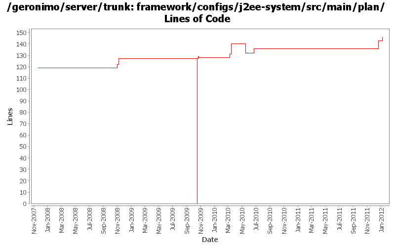

[root]/framework/configs/j2ee-system/src/main/plan

| Author | Changes | Lines of Code | Lines per Change |
|---|---|---|---|
| Totals | 17 (100.0%) | 243 (100.0%) | 14.2 |
| djencks | 6 (35.3%) | 203 (83.5%) | 33.8 |
| gawor | 6 (35.3%) | 30 (12.3%) | 5.0 |
| xuhaihong | 2 (11.8%) | 5 (2.1%) | 2.5 |
| gdamour | 3 (17.6%) | 5 (2.1%) | 1.6 |
GERONIMO-6251 determine if server is actually fully started, provide access to DependencyManager for osgi metadata purposes
3 lines of code changed in 1 file:
GERONIMO-6240 Make several base geronimo functions (kernel, deployer, etc) DS services and make the car-maven-plugin take advantage of that. Server assembly doesn't work yet, builds framework.
69 lines of code changed in 1 file:
Improved Geronimo OBR support. Contains fix for GERONIMO-5392 as well as support for excludes and a shell command for refreshing the repository
4 lines of code changed in 1 file:
Add a wrapper GBean for SystemLog
3 lines of code changed in 1 file:
GERONIMO-4971: Initial OBR integration for Aries Applications. Some of the OBR resolver code is based on the resolver in Apache Aries
9 lines of code changed in 1 file:
GERONIMO-5176 tell the DependencyManager about artifact aliases
3 lines of code changed in 1 file:
add bin/geronimo and bin/client that work just like before. bin/karaf will only start the karaf framework
2 lines of code changed in 1 file:
GERONIMO-4925 Temporarily enable the EditableConfigurationManager to avoid those plug-in compile errors.
2 lines of code changed in 1 file:
bunch of logging improvements
9 lines of code changed in 1 file:
set geronimo home.dir and server.dir - got lost in translation to gbean annotations
3 lines of code changed in 1 file:
GERONIMO-4916 step 2 move sandbox osgi framework into trunk
127 lines of code changed in 1 file:
GERONIMO-4916 step 1 remove old framwork
0 lines of code changed in 1 file:
When a ConfigurationData is loaded from a ConfigurationStore, its dependencies are transformed through the execution of Groovy scripts matching the pattern Dependencies(.*).groovy located in the same directory than the configuration being loaded.
Also a ConfigurationDataTransformer gets attached to the ConfigurationData so that when GBeans are loaded subsequently when the Configuration ClassLoader is available they can be transformed through the execution of Groovy scripts matching the pattern GBeans(.*).groovy located in the same directory than the configuration being loaded.
(GERONIMO-4401) Extension of configuration dependencies and gbeans via Groovy scripts
5 lines of code changed in 1 file:
install JUL to SLF4J bridge (GERONIMO-4321)
3 lines of code changed in 1 file:
GERONIMO-3718 experimental patch to speed up resource-refs.
1 lines of code changed in 1 file:
When distributing w/o the explicit selection of a target, we only distribute
to the first target returned by DeploymentManager. This first target is
the default target, or configuration store, and users can specify an abstract
name query (in EditableKernelConfigurationManager) to identify this default
target.
Now that multiple configuration stores per server are better handled
out-of-the-box, we can re-enable the "clustered" configuration stores.
Also, let's more the rmock dependency to testsupport-common so that we
can use it from all our tests.
This fixes GERONIMO-3612 - When no target configuration store is explicitly
specified while installing a configuration, the configuration should be
installed to a default configuration store
0 lines of code changed in 2 files: